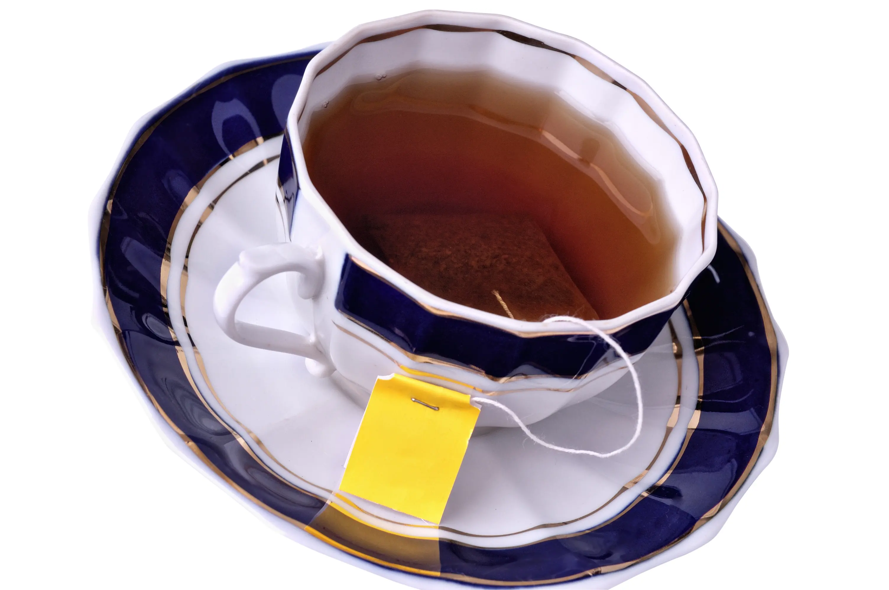

Types of Tea in Sri Lanka

Ceylon's Finest Tea
There area many different varieties of Tea available in Sri Lanka. Each Tea type has a unique flavour to it and each Tea type offers different health benefits. All the different flavours of Tea typically come from the same plant but it is the soil type and the climate that provides each plant a unique taste. Amongst all of the wonderful flavours Sri Lankans mostly enjoy Black Tea with strong Milk and Sugar. Here are some of the Tea Types that Sri Lanka has to offer:
-

Black Tea
Originally Black Tea was only made in China. As years passed China started exporting Black Tea to the Eastern society and gradually the methods were widely spread all across the world. Slowly Black Tea became the favorite Tea in many parts of the world. The reason for this is because Black Tea’s taste remains fresh the longest compared to other Teas. Sri-Lanka is also very well known for its Black Tea and is also considered as one of the best flavored Black Tea in the world.
-
Green Tea
Originally Black Tea was only made in China. As years passed China started exporting Black Tea to the Eastern society and gradually the methods were widely spread all across the world. Slowly Black Tea became the favorite Tea in many parts of the world. The reason for this is because Black Tea’s taste remains fresh the longest compared to other Teas. Sri-Lanka is also very well known for its Black Tea and is also considered as one of the best flavored Black Tea in the world.

-
White Tea
At this stage the leaves are put onto long tables which contain a mesh that would often have a ventilation system built beneath itself. Since most of the young tea leaves have some moisture in it, the ventilation system would reduce the moisture by about 60%. Withering is considered to be of the critical stages.
| Tea Type | Benefits | Pricing Range |
|---|---|---|
| Black Tea | Black Tea helps blood circulation and is considered good for the heart. It helps reduce Cholestterol and thereby reduces the blood pressure and stimulates the ability to think clearly. | Expensive |
| Green Tea | Black Tea helps blood circulation and is considered good for the heart. It helps reduce Cholestterol and thereby reduces the blood pressure and stimulates the ability to think clearly. | Average |
| Macho Tea | Black Tea helps blood circulation and is considered good for the heart. It helps reduce Cholestterol and thereby reduces the blood pressure and stimulates the ability to think clearly. | Affordable |
| Key Facts about the different types of Tea | ||